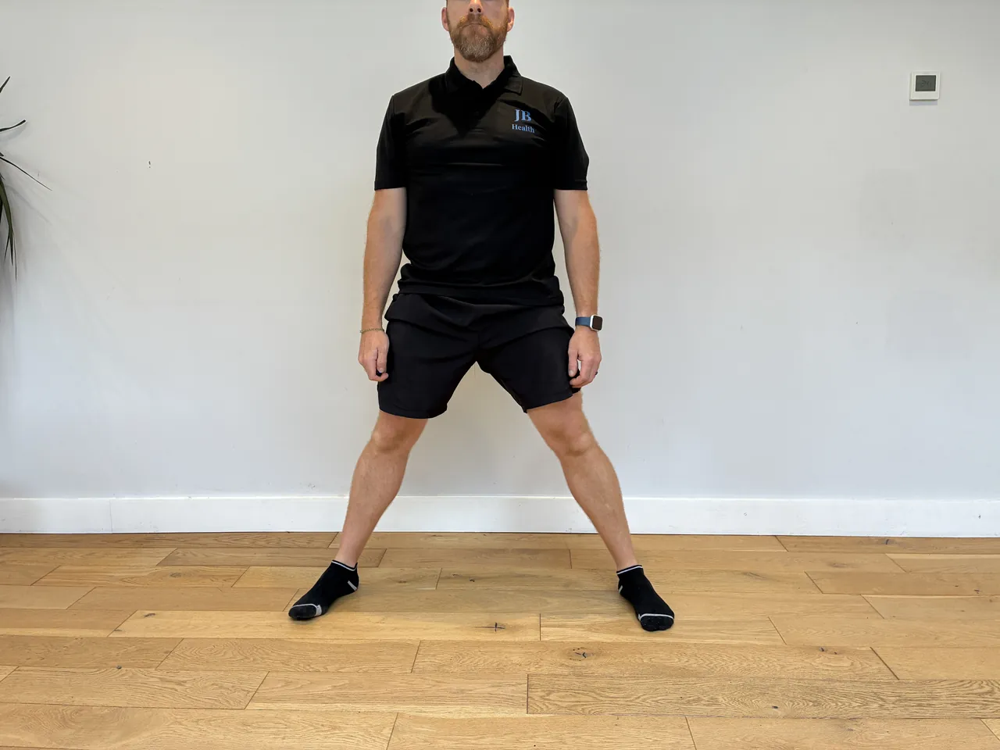
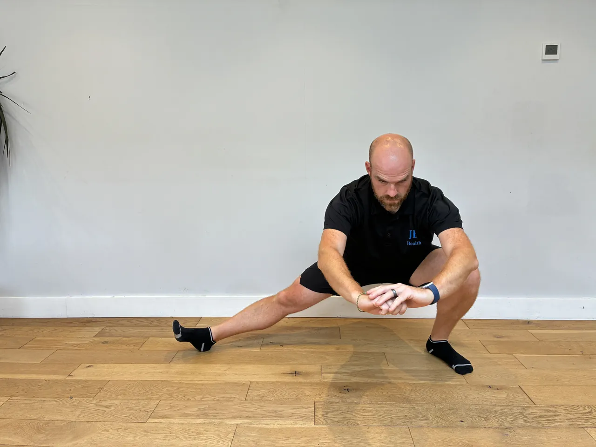

Start: Hold a dumbbell or kettlebell close to your chest with both hands, elbows tucked down, feet shoulder-width, toes slightly out.
Movement: Sit the hips back and down into a squat, keeping the weight at the chest and the torso upright, then drive up through the heels to stand tall.
Focus: Keep the knees tracking over the toes, never caving in, and the heels flat. Keep the chest up and the weight close, and squat only as deep as you can control comfortably.
Start: Stand on one leg holding a weight, the other leg ready to travel back, torso tall, standing knee soft.
Movement: Hinge from the hip, pushing it back as the weight lowers along the leg and the free leg travels back, then return.
Focus: Push the hip back with a flat back and keep the hips level, feeling the hamstring. Keep the standing knee soft, move slowly, and control the return.
Start: Lie on your back on the mat, knees bent, feet flat, one dumbbell in one hand at chest height, the upper arm resting lightly on the floor with the elbow at about 45 degrees.
Movement: Press the dumbbell up until the arm is nearly straight, then lower under control until the upper arm rests back on the floor.
Focus: Let the elbow touch the floor gently each rep rather than crashing down, and keep the shoulder blade set. Because it is one side at a time, brace the trunk so it does not twist toward the working arm.
Start: Hand and knee on a bench, the other foot planted, a dumbbell in the free hand hanging down, back flat and level.
Movement: Pull the dumbbell towards the hip, driving the elbow back and up, then lower slowly under control.
Focus: Lead with the elbow and squeeze the shoulder blade, keeping the back flat and level, not twisting to lift. Keep the shoulder down, and control the lower.
Start: Stand tall, a light weight at one shoulder, ribs down, core braced.
Movement: Press the weight overhead and move it through small controlled positions (front, side, angles) as set, keeping the arm working, then return.
Focus: Keep the ribs down and the core braced so the back doesn't arch as the arm moves. Keep the shoulder down, move slowly and controlled, and use a light weight given the changing angles.
Start: Stand tall, feet hip-width, balls of the feet on the floor or the edge of a step, holding a support for balance.
Movement: Rise up onto the toes as high as you comfortably can, then lower the heels slowly under control.
Focus: Rise and lower slowly and evenly, not bouncing, through the full comfortable range. Keep the ankles tracking straight, not rolling out, and control the lower.


Start: Lie on your side, hips and knees bent, feet together, hips stacked, a band around the thighs if used.
Movement: Keeping the feet together, open the top knee up like a clam, then lower under control.
Focus: Open only as far as the hips stay stacked, not rolling the top hip back. Keep the movement slow, and feel the outer hip and glute work.
Start: Stand on one leg without support, torso tall, other foot lifted, arms ready to help balance.
Movement: Hold the single-leg balance freely for the set time, then swap.
Focus: Keep the hips level and the standing knee soft, fixing the eyes on a point ahead. Make small ankle adjustments to stay steady, and keep the core engaged.
Start: Stand tall on one leg with a soft bend in the knee.
Movement: Spring forward onto the opposite foot, pivot back to the starting position. Repeat for all reps, then move to lateral — spring out to the side and pivot back. Finally rotational — jump and rotate in the air, planting your foot behind and diagonally. Complete all reps in each direction before moving to the next.
Focus: Land softly on each step and control the pivot back. Keep your knee in line with your hip and ankle throughout. Build confidence in each direction before moving to the next.


Start: Stand with feet very wide apart, toes pointing slightly out.
Movement: Bend one knee to squat deeply to that side while the other leg stays straight. Return to centre and alternate sides.
Focus: Shift your weight deeply to one side while the other leg remains straight. Feel the deep hip and adductor stretch.
Start: Stand with a slight hip hinge, free hand braced on your thigh or a bench for support.
Movement: Raise one arm out to the side to shoulder height, leading with slight external rotation of the upper arm. Complete all reps, then switch arms.
Focus: Squeeze the shoulder blade at the top. Control the lowering phase.
Start: Lie on your back with hands at sides or under lower back.
Movement: Draw knees toward your chest, lifting hips slightly off the floor. Lower feet back down to touch, pause and reset, then repeat.
Focus: Reset your core and lower back position each time your feet touch the floor — don't rush into the next rep.
Start: Hold a weight at the chest with both hands, elbows tucked, feet shoulder-width, toes slightly out.
Movement: Sit down into a squat, pause for two to three seconds at the bottom holding still, then drive up through the heels to stand.
Focus: Keep the knees tracking over the toes and the heels down through the pause. Keep the chest up and the weight close, and pause only at a depth you control comfortably.
Start: Stand tall, feet hip-width, a dumbbell in each hand resting in front of your thighs, knees softly bent, core braced.
Movement: Push the hips back and lower the dumbbells down the front of your legs, keeping them close, until you feel the hamstrings stretch. Drive the hips forward to return.
Focus: Keep the back flat and the dumbbells close throughout. Hinge at the hips, don't squat or round the back. Go only as low as your flat back allows.
Start: Half kneel, one knee down and one foot forward, a weight at the shoulder, hips tall, ribs down, core braced.
Movement: Press the weight overhead until the arm is straight, then lower back to the shoulder under control.
Focus: Keep the ribs down and the hips tall so the lower back doesn't arch. Keep the shoulder down away from the ear, and keep the torso square and steady in the half-kneel.
Start: Lie chest-down on an incline bench, a dumbbell in one hand hanging down, the other steadying you, back relaxed.
Movement: Pull the dumbbell towards the hip, driving the elbow back, then lower slowly under control.
Focus: Lead with the elbow and squeeze the shoulder blade, letting the bench keep the back supported and still. Keep the shoulder down, and control the lower without swinging.
Start: Lie face down, elbows bent and tucked towards the sides so the arms form a W, thumbs up, light or no weight.
Movement: Raise the arms into the W, drawing the elbows down and in and squeezing the shoulder blades, then lower under control.
Focus: Draw the elbows down and in, squeezing the shoulder blades, not shrugging up. Keep the neck long, use a light weight, and control the lower.
Start: Stand with the back against a wall or sit tall, heels down, toes free to lift.
Movement: Raise the toes and fronts of the feet up towards the shins, then lower under control.
Focus: Move only at the ankles, raising the toes as high as you can, and control the lower. Keep it slow and deliberate, feeling the front of the shin work.
Start: Stand on one leg near a support, torso tall, other foot lifted, then close the eyes.
Movement: Hold the single-leg balance with the eyes closed for the set time, then swap.
Focus: Keep the hips level and the standing knee soft, making constant small ankle adjustments without sight. Keep the core engaged, breathe, and keep support within reach.
Start: Hold a side plank, body in a straight line, shoulder over the elbow.
Movement: Lower the hips slowly towards the floor a short way, then lift back up to the straight line, controlled, for the set reps.
Focus: Control the dip and the lift with the side waist, keeping the body in line front to back. Don't let the hips sag at the bottom or the torso rotate, and keep the shoulder stacked.